Last updated: 2026-03-05
Checks: 5 2
Knit directory: NMD-analysis/
This reproducible R Markdown analysis was created with workflowr (version 1.7.2). The Checks tab describes the reproducibility checks that were applied when the results were created. The Past versions tab lists the development history.
The R Markdown is untracked by Git. To know which version of the R
Markdown file created these results, you’ll want to first commit it to
the Git repo. If you’re still working on the analysis, you can ignore
this warning. When you’re finished, you can run
wflow_publish to commit the R Markdown file and build the
HTML.
Great job! The global environment was empty. Objects defined in the global environment can affect the analysis in your R Markdown file in unknown ways. For reproduciblity it’s best to always run the code in an empty environment.
The command set.seed(20230314) was run prior to running
the code in the R Markdown file. Setting a seed ensures that any results
that rely on randomness, e.g. subsampling or permutations, are
reproducible.
Great job! Recording the operating system, R version, and package versions is critical for reproducibility.
Nice! There were no cached chunks for this analysis, so you can be confident that you successfully produced the results during this run.
Using absolute paths to the files within your workflowr project makes it difficult for you and others to run your code on a different machine. Change the absolute path(s) below to the suggested relative path(s) to make your code more reproducible.
| absolute | relative |
|---|---|
| /home/neuro/Documents/NMD_analysis/Analysis/NMD-analysis/output/Figures/Main/Count_NIF_2f.png | output/Figures/Main/Count_NIF_2f.png |
| /home/neuro/Documents/NMD_analysis/Analysis/NMD-analysis/output/Figures/Main/Upf3b-stability_fig3a.png | output/Figures/Main/Upf3b-stability_fig3a.png |
| /home/neuro/Documents/NMD_analysis/Analysis/NMD-analysis/output/Figures/Main/Upf3b-stability_overlap_fig3b.png | output/Figures/Main/Upf3b-stability_overlap_fig3b.png |
| /home/neuro/Documents/NMD_analysis/Analysis/NMD-analysis/output/Figures/Main/Upf3b-stability-overlap_3c.png | output/Figures/Main/Upf3b-stability-overlap_3c.png |
| /home/neuro/Documents/NMD_analysis/Analysis/NMD-analysis/output/Figures/Main/DD-NMD-overlap_fig3e.png | output/Figures/Main/DD-NMD-overlap_fig3e.png |
Great! You are using Git for version control. Tracking code development and connecting the code version to the results is critical for reproducibility.
The results in this page were generated with repository version 08bbafd. See the Past versions tab to see a history of the changes made to the R Markdown and HTML files.
Note that you need to be careful to ensure that all relevant files for
the analysis have been committed to Git prior to generating the results
(you can use wflow_publish or
wflow_git_commit). workflowr only checks the R Markdown
file, but you know if there are other scripts or data files that it
depends on. Below is the status of the Git repository when the results
were generated:
Ignored files:
Ignored: .Rhistory
Ignored: .Rproj.user/
Ignored: analysis/Enichment-analysis-fgsea.nb.html
Ignored: archive/
Ignored: tmp/
Untracked files:
Untracked: Rplots.pdf
Untracked: Upf3b-all-DEGs-genes.tsv
Untracked: Upf3b-bf-genes.tsv
Untracked: Upf3b-bf-genes.xlsx
Untracked: analysis/Differential-transcript-usage.Rmd
Untracked: analysis/Publication-Main-figures.Rmd
Untracked: analysis/Stability-DD-NMD.Rmd
Untracked: analysis/transcript-features.Rmd
Untracked: analysis/transcript-preprocessing.Rmd
Untracked: code/Archive/
Untracked: code/eisaR.R
Untracked: code/external_code/
Untracked: data/LTK_Sample Metafile_V3.txt
Untracked: data/Mus_musculus.GRCm39.105__nifs.tsv
Untracked: data/data.txt
Untracked: data/data2.txt
Untracked: data/fastq/
Untracked: data/fastqc/
Untracked: data/geneLists/
Untracked: data/genesets/
Untracked: data/genewalk/
Untracked: data/human_mouse_1to1_orthologs.csv
Untracked: data/nif_output/
Untracked: data/samples.txt
Untracked: genesets.csv
Untracked: output/Bona-fide-genes.xlsx
Untracked: output/DEG-limma-results.Rda
Untracked: output/DEG-list.Rda
Untracked: output/DEG-results.xlsx
Untracked: output/DEG/
Untracked: output/DET-analysis.xlsx
Untracked: output/DET-list.Rda
Untracked: output/EISA/
Untracked: output/Figures/
Untracked: output/For_presentation/
Untracked: output/GOseq-results.xlsx
Untracked: output/ISAR/
Untracked: output/Overlap-stability-DEG.xlsx
Untracked: output/Poster_plots/
Untracked: output/QC/
Untracked: output/RNA-stability.xlsx
Untracked: output/Stability/
Untracked: output/Thesis_plots/DD-NMD-overlaps.pdf
Untracked: output/Thesis_plots/DD-NMD/
Untracked: output/Thesis_plots/DEG_ratios.svg
Untracked: output/Thesis_plots/DEGs/
Untracked: output/Thesis_plots/DETs/
Untracked: output/Thesis_plots/GO-DEGs.png
Untracked: output/Thesis_plots/GO-DEGs.svg
Untracked: output/Thesis_plots/Gene-PCA.png
Untracked: output/Thesis_plots/NIFs/
Untracked: output/Thesis_plots/Proprotion_NIF.svg
Untracked: output/Thesis_plots/Upf2.svg
Untracked: output/Thesis_plots/Upf2_exp.png
Untracked: output/Thesis_plots/Upf3-dKD-stability-overlap.svg
Untracked: output/Thesis_plots/Upf3-dKD-stability.svg
Untracked: output/Thesis_plots/Upf3KD-overlap-DSG-DEG.pdf
Untracked: output/Thesis_plots/Upf3_cumulative.svg
Untracked: output/Thesis_plots/Upf3_paralog_cor.png
Untracked: output/Thesis_plots/Upf3_paralog_cor.svg
Untracked: output/Thesis_plots/Upf3a-bf-NIF-proportion.png
Untracked: output/Thesis_plots/Upf3a-bf-NIF-proportion.svg
Untracked: output/Thesis_plots/Upf3a-bf-candidates-features.svg
Untracked: output/Thesis_plots/Upf3a-bf-exp.svg
Untracked: output/Thesis_plots/Upf3a-bf-features.svg
Untracked: output/Thesis_plots/Upf3a-down-bf.svg
Untracked: output/Thesis_plots/Upf3a-down-exp.svg
Untracked: output/Thesis_plots/Upf3a-overlap-DSG-DEG.pdf
Untracked: output/Thesis_plots/Upf3a-stability-overlap.png
Untracked: output/Thesis_plots/Upf3a-stability-overlap.svg
Untracked: output/Thesis_plots/Upf3a-stability.png
Untracked: output/Thesis_plots/Upf3a-stability.svg
Untracked: output/Thesis_plots/Upf3a-transcript-overlap.svg
Untracked: output/Thesis_plots/Upf3a_OE_Upf3b_KD_cor.png
Untracked: output/Thesis_plots/Upf3a_Upf3dKD_cor.png
Untracked: output/Thesis_plots/Upf3a_bf_cumulative.svg
Untracked: output/Thesis_plots/Upf3a_oR_cor.svg
Untracked: output/Thesis_plots/Upf3a_specific_cumulative.svg
Untracked: output/Thesis_plots/Upf3b-NIF-proportion.svg
Untracked: output/Thesis_plots/Upf3b-bf-NIF-proportion.png
Untracked: output/Thesis_plots/Upf3b-bf-NIF-proportion.svg
Untracked: output/Thesis_plots/Upf3b-bf-candidates-features.svg
Untracked: output/Thesis_plots/Upf3b-bf-exp.svg
Untracked: output/Thesis_plots/Upf3b-bf-features.svg
Untracked: output/Thesis_plots/Upf3b-stability-overlap.png
Untracked: output/Thesis_plots/Upf3b-stability-overlap.svg
Untracked: output/Thesis_plots/Upf3b-stability.png
Untracked: output/Thesis_plots/Upf3b-stability.svg
Untracked: output/Thesis_plots/Upf3b-transcript-overlap.svg
Untracked: output/Thesis_plots/Upf3b_Upf3dKD_cor.png
Untracked: output/Thesis_plots/Upf3b_bf_cumulative.svg
Untracked: output/Thesis_plots/Upf3d-KD-candidates-features-1.svg
Untracked: output/Thesis_plots/Upf3d-KD-candidates-features-2.svg
Untracked: output/Thesis_plots/Upf3dKD-bf-NIF-features.svg
Untracked: output/Thesis_plots/Upf3dKD-bf-NIF-proportion.png
Untracked: output/Thesis_plots/Upf3dKD-bf-NIF-proportion.svg
Untracked: output/Thesis_plots/Upf3dKD-bf-candidates-features.svg
Untracked: output/Thesis_plots/Upf3dKD-stability-overlap.png
Untracked: output/Thesis_plots/Upf3dKD-stability.png
Untracked: output/Thesis_plots/Upf3dKD-transcript-overlap.svg
Untracked: output/Thesis_plots/all_overlaps-transcript-DEGs.svg
Untracked: output/Thesis_plots/all_overlaps-transcript.svg
Untracked: output/Thesis_plots/all_overlaps.svg
Untracked: output/Thesis_plots/all_overlaps_enrichment.svg
Untracked: output/Thesis_plots/overlap-bf-exp.svg
Untracked: output/Thesis_plots/overlapping-bf-features.svg
Untracked: output/Thesis_plots/overlaps/
Untracked: output/Thesis_plots/ratio_DET.svg
Untracked: output/Thesis_plots/total_DEG.svg
Untracked: output/Thesis_plots/trans-pca-final.svg
Untracked: output/Thesis_plots/trans-pca.svg
Untracked: output/Thesis_plots/transcript-gc-qc.pdf
Untracked: output/Thesis_plots/transcript_det_ma.pdf
Untracked: output/Thesis_plots/upf3a-check.svg
Untracked: output/Thesis_plots/upf3b-DEG-DSA.pdf
Untracked: output/Thesis_plots/upf3b-check.svg
Untracked: output/Thesis_plots/venn-bona-fide.pdf
Untracked: output/Transcript/
Untracked: output/Upf3b-high-confident-genes.xlsx
Untracked: output/fgsea-heatmap-data.Rda
Untracked: output/fgsea-output.xlsx
Untracked: output/fgsea_geneset_characterization.csv
Untracked: output/isoformSwitchAnalyzeR_isoform_AA_complete.fasta
Untracked: output/isoformSwitchAnalyzeR_isoform_AA_subset_1_of_3.fasta
Untracked: output/isoformSwitchAnalyzeR_isoform_AA_subset_2_of_3.fasta
Untracked: output/isoformSwitchAnalyzeR_isoform_AA_subset_3_of_3.fasta
Untracked: output/isoformSwitchAnalyzeR_isoform_nt.fasta
Untracked: output/limma-matrices.Rda
Untracked: output/sequences/
Unstaged changes:
Deleted: .Rprofile
Modified: .gitignore
Modified: NMD-analysis.Rproj
Modified: analysis/DEG-analysis.Rmd
Modified: analysis/Differential-transcript-expression.Rmd
Modified: analysis/Enichment-analysis-fgsea.Rmd
Modified: analysis/Enichment-analysis-goseq.Rmd
Modified: analysis/Quality-control.Rmd
Modified: analysis/RNA-stability.Rmd
Modified: analysis/_site.yml
Modified: code/functions.R
Modified: code/libraries.R
Modified: output/Thesis_plots/Count_NIF.svg
Modified: output/Thesis_plots/NIF_feature_OR.svg
Note that any generated files, e.g. HTML, png, CSS, etc., are not included in this status report because it is ok for generated content to have uncommitted changes.
There are no past versions. Publish this analysis with
wflow_publish() to start tracking its development.
source("code/plots.R")
source("code/functions.R")
source("code/libraries.R")
library(biomaRt)
library(nVennR)
library(eulerr)
library(ggsci)
library(janitor)
library(ggside)
library(ggstatsplot)
library(stargazer)
library(coin)
library(GeneOverlap)txdf = transcripts(EnsDb.Mmusculus.v79, return.type="DataFrame")
tx2gene = as.data.frame(txdf[,c("tx_id","gene_id", "tx_biotype")])load("output/DEG-list.Rda")DEColours <- c("Downregulated" = "#53A08E","Upregulated" = "#690020", "Not Sig" = "#CECCCA")
fc_thr <- log2(1.5)
contrast_labeller <- as_labeller(c(
"UPF3B_vs_Control" = "italic(Upf3b)~'KD DEGs'",
"UPF3A_vs_Control"= "italic(Upf3a)~'KD DEGs'",
"DoubleKD_vs_Control" = "italic(Upf3)~'dKD DEGs'",
"UPF3A_OE_UPF3B_KD_vs_Control" = "italic(Upf3a)~'OE'~italic(Upf3b)~'KD DEGs'"
), label_parsed)
df = res %>%
do.call("rbind", .) %>%
mutate(Result = ifelse(adj.P.Val < 0.05 & logFC > log2(1.5), "Upregulated",
ifelse(adj.P.Val < 0.05 & abs(logFC) > log2(1.5), "Downregulated", "Not Sig"))) %>%
dplyr::filter(contrast != "UPF3A_OE_vs_Control") %>%
mutate(contrast = factor(contrast, levels= c("UPF3B_vs_Control",
"UPF3A_vs_Control",
"DoubleKD_vs_Control",
"UPF3A_OE_UPF3B_KD_vs_Control")))
counts <- df %>%
dplyr::filter(Result %in% c("Upregulated","Downregulated")) %>%
group_by(contrast) %>%
summarise(
n_up = sum(Result == "Upregulated", na.rm = TRUE),
n_down = sum(Result == "Downregulated", na.rm = TRUE),
xmin = min(logFC, na.rm = TRUE),
xmax = max(logFC, na.rm = TRUE),
.groups = "drop"
) %>%
pivot_longer(c(n_up, n_down), names_to = "which", values_to = "n") %>%
mutate(
Result = ifelse(which == "n_up", "Upregulated", "Downregulated"),
# 5% inward from panel edge
x = ifelse(
Result == "Upregulated",
xmax - 0.05 * (xmax - xmin),
xmin + 0.05 * (xmax - xmin)
),
y = 7.5,
label = paste0("n = ", n)
)
deg_volcano_plot = df %>%
ggplot(aes(x= logFC,
y = -log10(adj.P.Val),
colour = as.factor(as.character(Result )))) +
geom_point(alpha = 0.75, size = 4) +
scale_colour_manual(values = DEColours) + theme_bw() +
# geom_text(
# data = counts,
# aes(x = x, y = y, label = label, colour = Result),
# inherit.aes = FALSE,
# family = "serif",
# size = 5
# ) +
xlab(bquote(log["2"](FC))) +
ylab(bquote(log["10"]("adjusted P-value"))) +
scale_colour_manual(
values = DEColours,
breaks = c("Upregulated", "Downregulated"),
drop = TRUE
) +
guides(colour = guide_legend(override.aes = list(size = 5, alpha = 1))) +
theme_bw() + geom_vline(xintercept = c(-log2(1.5),log2(1.5)), linetype = "dashed") +
theme(
legend.position = "top",
legend.title = element_blank(),
legend.background = element_rect(fill = "white", colour = "black", linewidth = 0.25),
legend.box.background = element_rect(fill = NA, colour = "black", linewidth = 0.25),
legend.key = element_rect(fill = "white", colour = NA),
axis.text = element_text(family = "serif", size = 14, color = "black"),
axis.title = element_text(family = "serif", size = 20, color = "black"),
strip.text = element_text(family = "serif", size = 14)
) + facet_grid(~contrast, scales = "free_x", labeller = contrast_labeller) + ylim(0, 10)
deg_volcano_plot 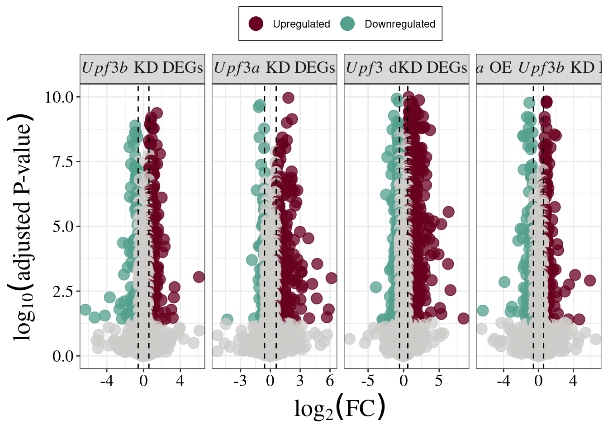
ggsave(plot = deg_volcano_plot, filename = here::here("output/Figures/Main/DEG_volcano_fig2a.png"),
dpi =1200, height = 6, width =10)contrasts = c("UPF3B_vs_Control","UPF3A_vs_Control" , "UPF3A_OE_vs_Control", "DoubleKD_vs_Control" , "UPF3A_OE_UPF3B_KD_vs_Control")
for_upf3b = contrasts[-c(1,3)]
overlap_upf3b = list()
for (c in for_upf3b ){
overlap = DEGenes$UPF3B_vs_Control %>%
inner_join(DEGenes[[c]] , by="EnsID") %>%
mutate(Label = ifelse(logFC.x > 0 & logFC.y >0 |
logFC.x < 0 & logFC.y <0, "Concordance", "Discordant"))
total = table(overlap$Label) %>% as.data.frame()
overlap_upf3b[[paste0(c, "_vs_Upf3b_KD")]] = total
}
for_upf3a = contrasts[c(4:5)]
overlap_upf3a = list()
for (c in for_upf3a ){
overlap = DEGenes$UPF3A_vs_Control %>%
inner_join(DEGenes[[c]], by="EnsID") %>%
mutate(Label = ifelse(logFC.x > 0 & logFC.y >0 |
logFC.x < 0 & logFC.y <0, "Concordance", "Discordant"))
total = table(overlap$Label) %>% as.data.frame()
overlap_upf3a[[paste0(c, "_vs_Upf3A_KD")]] = total
}
for_dkDupf3 = contrasts[c(5)]
overlap_dkDupf3 = list()
for (c in for_dkDupf3 ){
overlap = DEGenes$DoubleKD_vs_Control %>%
inner_join(DEGenes[[c]], by="EnsID") %>%
mutate(Label = ifelse(logFC.x > 0 & logFC.y >0 |
logFC.x < 0 & logFC.y <0, "Concordance", "Discordant"))
total = table(overlap$Label) %>% as.data.frame()
overlap_dkDupf3 [[paste0(c, "_vs_Upf3_dKD")]] = total
}
overlap_upf3b =do.call("rbind",overlap_upf3b) %>%
rownames_to_column("Comparisons") %>%
mutate_at(.vars = "Comparisons", .funs = gsub, pattern = "\\.[0-9]*$", replacement = "")
overlap_upf3a =do.call("rbind",overlap_upf3a) %>%
rownames_to_column("Comparisons") %>%
mutate_at(.vars = "Comparisons", .funs = gsub, pattern = "\\.[0-9]*$", replacement = "")
overlap_dkDupf3 =do.call("rbind",overlap_dkDupf3 ) %>%
rownames_to_column("Comparisons") %>%
mutate_at(.vars = "Comparisons", .funs = gsub, pattern = "\\.[0-9]*$", replacement = "")
all_comparisons = rbind(overlap_upf3b,overlap_upf3a, overlap_dkDupf3) %>%
mutate(Var1 = factor(Var1, levels = c("Discordant", "Concordance" )),
Comparisons = factor(Comparisons, levels = c("UPF3A_OE_UPF3B_KD_vs_Control_vs_Upf3_dKD",
"UPF3A_OE_UPF3B_KD_vs_Control_vs_Upf3A_KD",
"DoubleKD_vs_Control_vs_Upf3A_KD",
"UPF3A_OE_UPF3B_KD_vs_Control_vs_Upf3b_KD",
"DoubleKD_vs_Control_vs_Upf3b_KD",
"UPF3A_vs_Control_vs_Upf3b_KD"
) )) %>%
ggplot(aes(x = Comparisons, y = Freq, fill = Var1)) +
geom_bar(stat= "identity", width= 0.65) + coord_flip() + scale_fill_manual(values = c( "#BAB8B5","#EB635E")) +
theme_bw() +
theme(axis.text.x = element_text(size = 12, family = "serif", color = "black"),
axis.text.y = element_text(size = 12, family = "serif", color = "black"),
axis.title = element_text(size=14, family = "serif"),
legend.box.background = element_rect(color = "black"),
legend.text = element_text(family = "serif", size=10),
legend.title = element_text( family = "serif"),
plot.title = element_text(family = "serif", size =20),
panel.grid.major.x = element_blank(),
panel.grid.major.y = element_line( size=.1 ),
legend.position = "top",
strip.text.y = element_text(
size = 10, face = "bold.italic", family = "serif"
),
strip.text.x = element_text(
size = 10, family = "serif"
)) + labs(y= "Number of Overlapping transcripts",
fill = "Expression",
x= "") +
scale_x_discrete(labels = c(
"UPF3A_vs_Control_vs_Upf3b_KD" = "Upf3b KD DEGs,\nUpf3a KD DEGs",
"DoubleKD_vs_Control_vs_Upf3b_KD" = "Upf3b KD DEGs,\nUpf3 dKD DEGs",
"UPF3A_OE_UPF3B_KD_vs_Control_vs_Upf3b_KD" = "Upf3b KD DEGs,\nUpf3a OE — Upf3b KD\nDEGs",
"DoubleKD_vs_Control_vs_Upf3A_KD" = "Upf3a KD DEGs, \nUpf3 dKD DEGs",
"UPF3A_OE_UPF3B_KD_vs_Control_vs_Upf3A_KD" = "Upf3a KD DEGs,\nUpf3a OE — Upf3b KD\nDEGs",
"UPF3A_OE_UPF3B_KD_vs_Control_vs_Upf3_dKD" = "Upf3 dKD DEGs,\nUpf3a OE — Upf3b KD\nDEGs"
))
all_comparisons 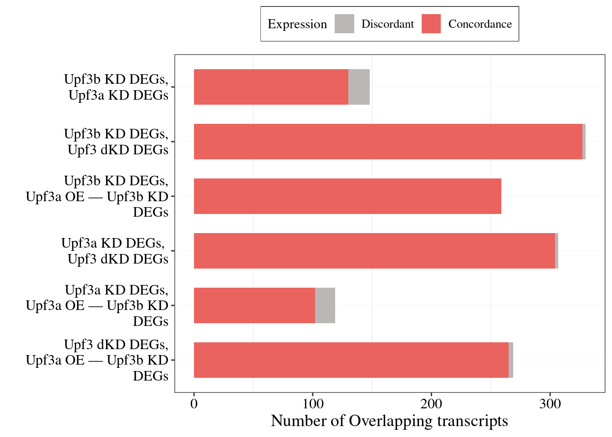
ggsave(filename = here::here("output/Figures/Main/DEGs-overlap-enrichment-fig2b.png"), plot = all_comparisons, dpi = 1200,
units = c("in"), height = 6, width = 6.5)library(GeneOverlap)
enrichment_DEGs_P = list()
enrichment_DEGs_OR = list()
test.list = list()
test.list$UPF3B_vs_Control = DEGenes$UPF3B_vs_Control$EnsID
test.list$UPF3A_vs_Control = DEGenes$UPF3A_vs_Control$EnsID
test.list$DoubleKD_vs_Control = DEGenes$DoubleKD_vs_Control$EnsID
test.list$UPF3A_OE_UPF3B_KD_vs_Control = DEGenes$UPF3A_OE_UPF3B_KD_vs_Control$EnsID
test.list$BG = res$UPF3B_vs_Control$EnsID
for_upf3b = contrasts[-c(1,3)]
for (c in for_upf3b ){
go.obj <- newGeneOverlap(test.list$UPF3B_vs_Control,
test.list[[c]],
genome.size=length(test.list$BG))
go.obj <- testGeneOverlap(go.obj)
enrichment_DEGs_P[[paste0("Upf3b_KD", "_", c)]] = go.obj@pval
enrichment_DEGs_OR[[paste0("Upf3b_KD", "_", c)]] = go.obj@odds.ratio
}
for_upf3a = contrasts[c(4:5)]
for (c in for_upf3a ){
go.obj <- newGeneOverlap(test.list$UPF3A_vs_Control,
test.list[[c]],
genome.size=length(test.list$BG))
go.obj <- testGeneOverlap(go.obj)
enrichment_DEGs_P[[paste0("Upf3a_KD", "_", c)]] = go.obj@pval
enrichment_DEGs_OR[[paste0("Upf3a_KD", "_", c)]] = go.obj@odds.ratio
}
for_dkDupf3 = contrasts[c(5)]
for (c in for_dkDupf3 ){
go.obj <- newGeneOverlap(test.list$DoubleKD_vs_Control,
test.list[[c]],
genome.size=length(test.list$BG))
go.obj <- testGeneOverlap(go.obj)
enrichment_DEGs_P[[paste0("Upf3_dKD", "_", c)]] = go.obj@pval
enrichment_DEGs_OR[[paste0("Upf3_dKD", "_", c)]] = go.obj@odds.ratio
}
enrichment_DEGs_OR %>% do.call(rbind,.) %>%
set_colnames("OR") %>%
cbind(enrichment_DEGs_P %>% do.call(rbind,.) %>% set_colnames("pvalue")) %>%
as.data.frame() %>% DT::datatable()cor_upf3a_upf3b = DEGenes$UPF3B_vs_Control %>%
inner_join(DEGenes$UPF3A_vs_Control, by = "EnsID") %>%
mutate(Label = ifelse(logFC.x > 0 & logFC.y >0 |
logFC.x < 0 & logFC.y <0, "Concordance", "Discordant")) %>%
ggscatter(., x= "logFC.x", y="logFC.y",
cor.coef = TRUE, add = "reg.line",
cor.coeff.args = list(size = 6, family = "serif"),
size=5, alpha =0.75, color = "Label",
conf.int = TRUE, add.params = list(color = "blue",
fill = "lightgray")) +
theme_bw() + ylab(expression(italic("Upf3a") ~ "KD (LFC)")) +
xlab(expression(italic("Upf3b") ~ "KD (LFC)")) +
geom_hline(yintercept = 0, size = 0.5,lty = "dashed", color = "grey60") +
geom_vline(xintercept = 0, size = 0.5, lty = "dashed", color = "grey60") + theme(legend.position = "none") +
scale_color_manual(values = c("#EB635E", "#BAB8B5")) +
theme(axis.text.x = element_text(size = 18, family = "serif", color = "black"),
axis.text.y = element_text(size = 18, family = "serif", color = "black"),
axis.title = element_text(size=20, family = "serif"),
legend.box.background = element_rect(color = "black"),
legend.text = element_text(family = "serif"),
legend.title = element_text( family = "serif"),
plot.title = element_text(family = "serif", size =20),
panel.grid.major.x = element_blank(),
panel.grid.major.y = element_line( size=.1 ),
legend.position = "top",
strip.text.y = element_text(
size = 10, face = "bold.italic", family = "serif"
),
strip.text.x = element_text(
size = 10, family = "serif"
)) + labs(color = "Expression")
cor_upf3a_upf3b 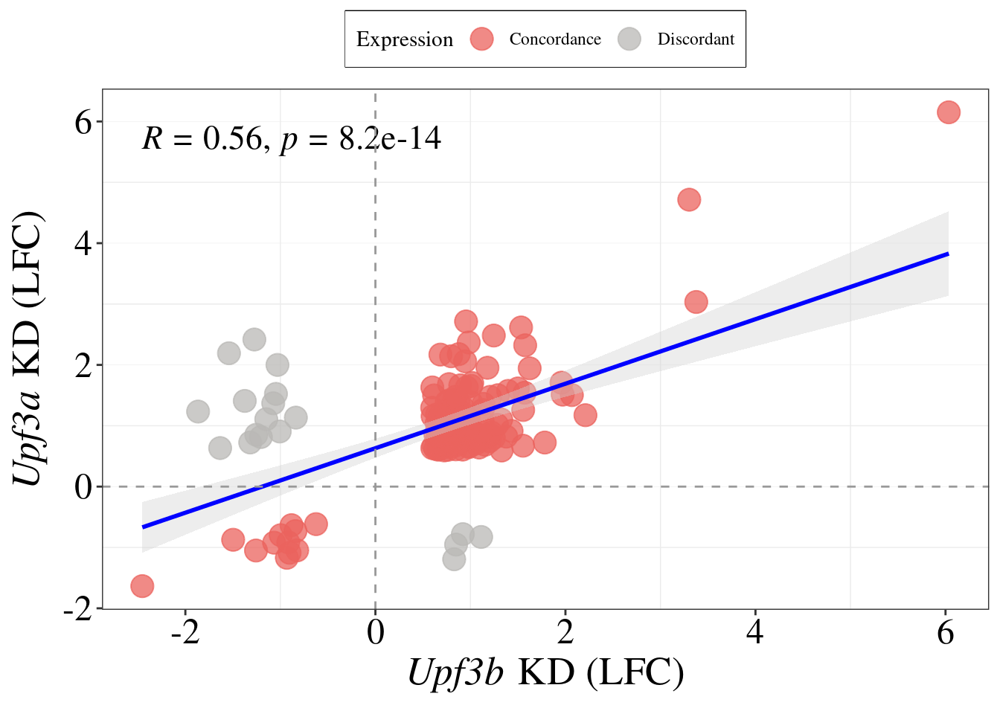
ggsave(filename = here::here("output/Figures/Main/Upf3b-Upf3a-cor-fig2c.png"), plot = cor_upf3a_upf3b , dpi = 1200,
units = c("in"), height = 7.5, width = 4)
cor_upf3b_upf3d = DEGenes$UPF3B_vs_Control %>%
inner_join(DEGenes$DoubleKD_vs_Control, by = "EnsID") %>%
mutate(Label = ifelse(logFC.x > 0 & logFC.y >0 |
logFC.x < 0 & logFC.y <0, "Concordance", "Discordant")) %>%
ggscatter(., x= "logFC.x", y="logFC.y",
cor.coef = TRUE, add = "reg.line",
size=5, alpha =0.75, color = "Label",
cor.coeff.args = list(size = 6, family = "serif"),
conf.int = TRUE, add.params = list(color = "blue",
fill = "lightgray")) +
theme_bw() + ylab(expression(italic("Upf3") ~ "dKD (LFC)")) +
xlab(expression(italic("Upf3b") ~ "KD (LFC)")) +
geom_hline(yintercept = 0, size = 0.5,lty = "dashed", color = "grey60") +
geom_vline(xintercept = 0, size = 0.5, lty = "dashed", color = "grey60") + theme(legend.position = "none") +
scale_color_manual(values = c("#EB635E", "#BAB8B5")) +
theme(axis.text.x = element_text(size = 18, family = "serif", color = "black"),
axis.text.y = element_text(size = 18, family = "serif", color = "black"),
axis.title = element_text(size=25, family = "serif"),
legend.box.background = element_rect(color = "black"),
legend.text = element_text(family = "serif"),
legend.title = element_text( family = "serif"),
plot.title = element_text(family = "serif", size =20),
panel.grid.major.x = element_blank(),
panel.grid.major.y = element_line( size=.1 ),
legend.position = "top",
strip.text.y = element_text(
size = 10, face = "bold.italic", family = "serif"
),
strip.text.x = element_text(
size = 10, family = "serif"
)) + labs(color = "Expression")
cor_upf3b_upf3d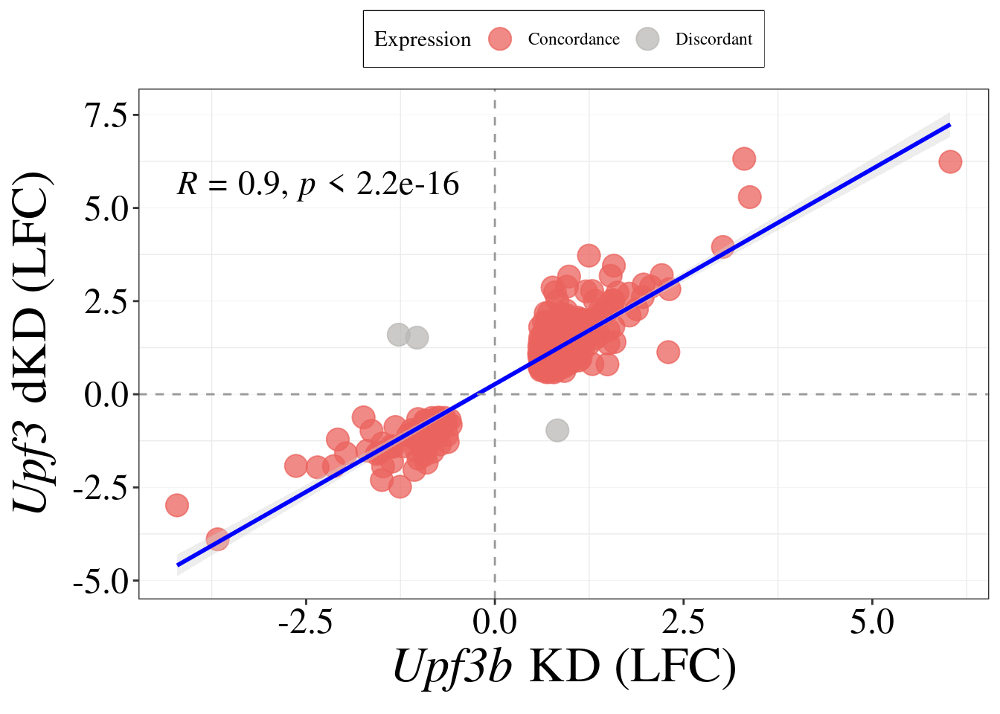
ggsave(filename = here::here("output/Figures/Main/Upf3b-Upf3dKD-cor-fig2c.png"), plot = cor_upf3b_upf3d , dpi = 1200,
units = c("in"), height = 7.5, width = 4)
cor_upf3a_upf3d = DEGenes$UPF3A_vs_Control %>%
inner_join(DEGenes$DoubleKD_vs_Control, by = "EnsID") %>%
mutate(Label = ifelse(logFC.x > 0 & logFC.y >0 |
logFC.x < 0 & logFC.y <0, "Concordance", "Discordant")) %>%
ggscatter(., x= "logFC.x", y="logFC.y",
cor.coef = TRUE, add = "reg.line",
size=5, alpha =0.75, color = "Label",
cor.coeff.args = list(size = 6, family = "serif"),
conf.int = TRUE, add.params = list(color = "blue",
fill = "lightgray")) +
theme_bw() +ylab(expression(italic("Upf3") ~ "dKD (LFC)")) +
xlab(expression(italic("Upf3a") ~ "KD (LFC)")) +
geom_hline(yintercept = 0, size = 0.5,lty = "dashed", color = "grey60") +
geom_vline(xintercept = 0, size = 0.5, lty = "dashed", color = "grey60") + theme(legend.position = "none") +
scale_color_manual(values = c("#EB635E", "#BAB8B5")) +
theme(axis.text.x = element_text(size = 18, family = "serif", color = "black"),
axis.text.y = element_text(size = 18, family = "serif", color = "black"),
axis.title = element_text(size=20, family = "serif"),
legend.box.background = element_rect(color = "black"),
legend.text = element_text(family = "serif"),
legend.title = element_text( family = "serif"),
plot.title = element_text(family = "serif", size =20),
panel.grid.major.x = element_blank(),
panel.grid.major.y = element_line( size=.1 ),
legend.position = "top",
strip.text.y = element_text(
size = 10, face = "bold.italic", family = "serif"
),
strip.text.x = element_text(
size = 10, family = "serif"
)) + labs(color = "Expression")
cor_upf3a_upf3d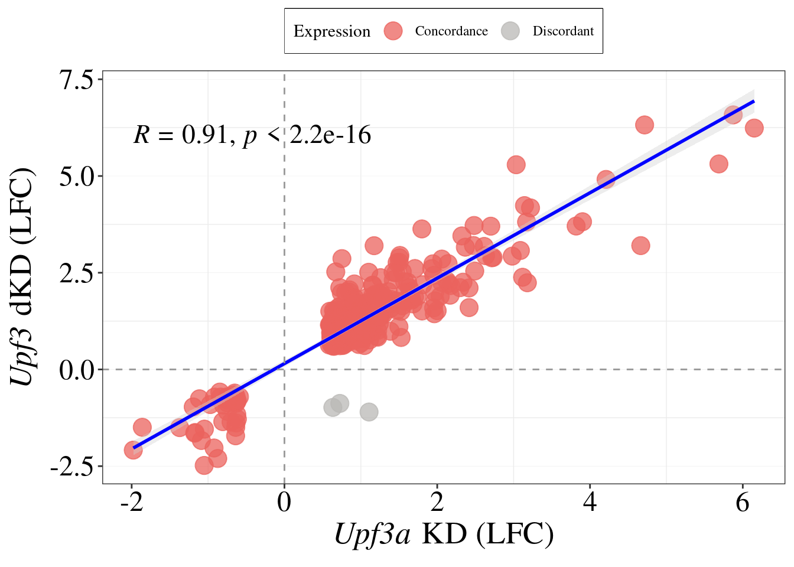
ggsave(filename = here::here("output/Figures/Main/Upf3a-Upf3dKD-cor-fig2c.png"), plot = cor_upf3a_upf3d , dpi = 1200,
units = c("in"), height = 7.5, width = 4)
Upf3a_oR_cor = DEGenes$UPF3B_vs_Control %>%
#rownames_to_column("EnsID") %>%
inner_join(DEGenes$UPF3A_OE_UPF3B_KD_vs_Control, #%>%
# rownames_to_column("EnsID"),
by = "EnsID") %>%
mutate(Label = ifelse(logFC.x > 0 & logFC.y >0 |
logFC.x < 0 & logFC.y <0, "Concordant", "Discordant")) %>%
ggscatter(., x= "logFC.x", y="logFC.y",
cor.coef = TRUE, add = "reg.line",
size=5, alpha =0.75, color = "Label",
cor.coeff.args = list(size = 6, family = "serif"),
conf.int = TRUE, add.params = list(color = "blue",
fill = "lightgray")) +
theme_bw() +
ylab(expression(italic("Upf3a") ~ "OE -" ~ italic("Upf3b") ~ "KD (LFC)")) +
xlab(expression(italic("Upf3b") ~ "KD (LFC)")) +
geom_hline(yintercept = 0, size = 0.5,lty = "dashed", color = "grey60") +
geom_vline(xintercept = 0, size = 0.5, lty = "dashed", color = "grey60") + theme(legend.position = "none") +
scale_color_manual(values = c("#EB635E", "#BAB8B5")) +
theme(axis.text.x = element_text(size = 18, family = "serif", color = "black"),
axis.text.y = element_text(size = 18, family = "serif", color = "black"),
axis.title = element_text(size=20, family = "serif"),
legend.box.background = element_rect(color = "black"),
legend.text = element_text(family = "serif"),
legend.title = element_text( family = "serif"),
plot.title = element_text(family = "serif", size =20),
panel.grid.major.x = element_blank(),
panel.grid.major.y = element_line( size=.1 ),
legend.position = "top",
strip.text.y = element_text(
size = 10, face = "bold.italic", family = "serif"
),
strip.text.x = element_text(
size = 10, family = "serif"
)) + labs(color = "Expression")
Upf3a_oR_cor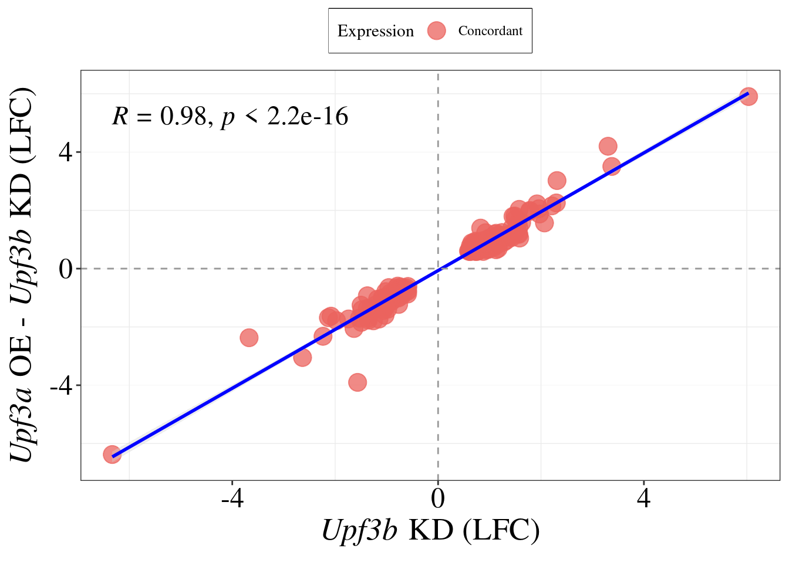
ggsave(filename = here::here("output/Figures/Main/Upf3a-Upf3aOEUpf3bKD-cor-fig2c.png"), plot = cor_upf3a_upf3d , dpi = 1200,
units = c("in"), height = 7.5, width = 4)
ggarrange(cor_upf3a_upf3b, cor_upf3b_upf3d,
cor_upf3a_upf3d, Upf3a_oR_cor, ncol =4, common.legend = TRUE)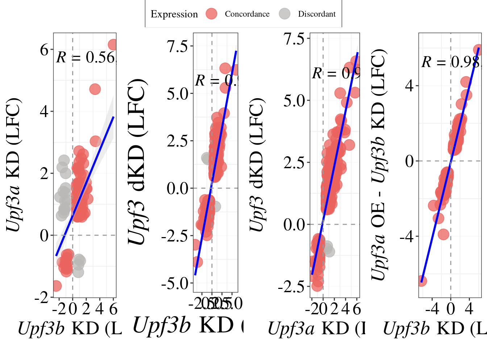
load(file=here::here("output/DET-list.Rda"))nif_features = list()
for (i in names(res_dte)[-3]){
name = i
temp = res_dte[[i]]
message("Counting NIFs in upregulated transcripts for ", name)
sig_up = temp %>% as.data.frame() %>%
dplyr::filter(FDR < 0.05, logFC > log2(1))
utr = table(sig_up$NIF_long_3utr)[2]
dej = table(sig_up$NIF_dEJ)[2]
uorf = table(sig_up$NIF_uORF)[2]
none = table(sig_up$nif_feature)[1]
total_nif_up = rbind(utr, dej, uorf, none) %>%
as.data.frame() %>%
rownames_to_column("NIF_feature") %>%
mutate(Condition = name,
Expression = "Up") %>%
dplyr::rename("Count" = "1")
message("Counting NIFs in downregulated transcripts for ", name)
sig_down = temp %>% as.data.frame() %>%
dplyr::filter(FDR < 0.05, logFC < log2(1))
utr = table(sig_down$NIF_long_3utr)[2]
dej = table(sig_down$NIF_dEJ)[2]
uorf = table(sig_down$NIF_uORF)[2]
none = table(sig_down$nif_feature)[1]
total_nif_down = rbind(utr, dej, uorf, none) %>%
as.data.frame() %>%
rownames_to_column("NIF_feature") %>%
mutate(Condition = name,
Expression = "Down") %>%
dplyr::rename("Count" = "1")
nif_features= rbind(nif_features, total_nif_up, total_nif_down, stringsAsFactors = FALSE)
}
OE_df = data.frame("NIF_feature" = "")
### For overexprssion - up
## 0 for long 3'UTR
## 0 for dEJ
## 1 for uORF
### down
## 3 long utr
## 0 dej
### 1 for uORF
OE_df = data.frame("NIF_feature" = rep(c("utr", "dej", "uorf"), 2),
"Count" = c(0,0, 1,3,0, 1),
"Condition" = rep(c("UPF3A_OE_Control")),
"Expression" = c(rep("Up",3), rep("Down", 3)))
nif_features= rbind(nif_features, OE_df, stringsAsFactors = FALSE)
condition.labs <- c("Upf3b KD", "Upf3a KD", "Upf3 dKD", "Upf3a OE", "Upf3a OE, Upf3b KD")
names(condition.labs) <- c("UPF3B_KD", "UPF3A_KD", "UPF3A_KD_UPF3B_KD",
"UPF3A_OE", "UPF3A_OE_UPF3B_KD")
nif_number = nif_features %>%
mutate(NIF_feature = gsub("utr", "Long 3'UTR", NIF_feature),
NIF_feature = gsub("uorf", "Upstream ORF", NIF_feature),
NIF_feature = gsub("dej", "Downstream exon junction", NIF_feature),
Condition = gsub("_Control", "", Condition)) %>%
mutate(Condition = factor(Condition, levels = c("UPF3B_KD",
"UPF3A_KD",
"UPF3A_KD_UPF3B_KD",
"UPF3A_OE",
"UPF3A_OE_UPF3B_KD")),
Expression = factor(Expression, levels = c("Down", "Up")),
NIF_feature = factor(NIF_feature, levels = c("none",
"Upstream ORF",
"Long 3'UTR",
"Downstream exon junction"))) %>%
ggplot(aes(x= NIF_feature, y = Count, fill = Expression)) +
geom_bar(stat = "identity", position = "stack", width = .5) + coord_flip() +
theme_bw() +
facet_grid(~Condition,
labeller = labeller(Condition = condition.labs)) +
xlab("") + ylab("") + scale_fill_manual(values = c("Up"= "#b23a48",
"Down" = "grey")) +
theme(axis.text.x = element_text(size = 12, family = "serif", color = "black", angle = 90),
axis.text.y = element_text(size = 12, family = "serif", color = "black"),
axis.title = element_text(size=15, family = "serif"),
legend.box.background = element_rect(color = "black"),
legend.text = element_text(family = "serif"),
legend.title = element_text( family = "serif"),
plot.title = element_text(family = "serif", size =20),
panel.grid.major.x = element_blank(),
panel.grid.major.y = element_line( size=.1 ),
legend.position = "top",
strip.text.x = element_text(
size = 12, face = "bold.italic", family = "serif"
))
nif_number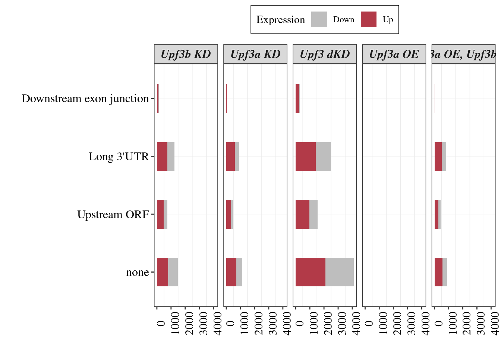
ggsave(filename = "/home/neuro/Documents/NMD_analysis/Analysis/NMD-analysis/output/Figures/Main/Count_NIF_2f.png",
plot = nif_number , units = c("in"), height = 5, width = 14)load("output/Stability/differential-stability.Rda")upf3b_res = z[[2]]
DEColours <- c("Destabilized" = "#2F124B","Stabilised" = "#ee6c4d", "Not significant" = "#D3D5E3", "NA" = "#D3D5E3")
volc = upf3b_res %>%
mutate(results = ifelse(log2FoldChange> 0 & padj < 0.05, "Stabilised",
ifelse(padj < 0.05 & log2FoldChange < 0, "Destabilized", "Not significant"))) %>%
drop_na("results") %>%
ggplot(aes(x = log2FoldChange,
y = -log10(padj),
colour = as.factor(as.character(results )))) +
geom_point(alpha = 0.8, size =3) +
scale_colour_manual(values = DEColours) + theme_classic() +
geom_hline(yintercept = -log10(0.05), color = "grey60", size = 0.5, lty = "dashed") +
xlab(bquote(log["2"](FC))) +
ylab(bquote(-log["10"]("adjusted P-value"))) +
# labs(x = "log2 Fold Change", y = "-log10 adj p-value") +
# ggtitle("Upf3b KD differentially stabilised genes") +
geom_vline(xintercept = 0, size = 0.5, lty = "dashed", color = "grey60") + xlim(-3, 3) +
ylim(0,7.5) +
theme(axis.text.x = element_text(size = 20, family = "serif", color = "black"),
axis.text.y = element_text(size = 20, family = "serif", color = "black"),
axis.title = element_text(size=20, family = "serif"),
legend.box.background = element_rect(color = "black"),
legend.text = element_text(family = "serif", size = 15),
legend.title = element_text( family = "serif"),
plot.title = element_text(family = "serif", size =15),
legend.position = "top"
) + labs(color = "")
volc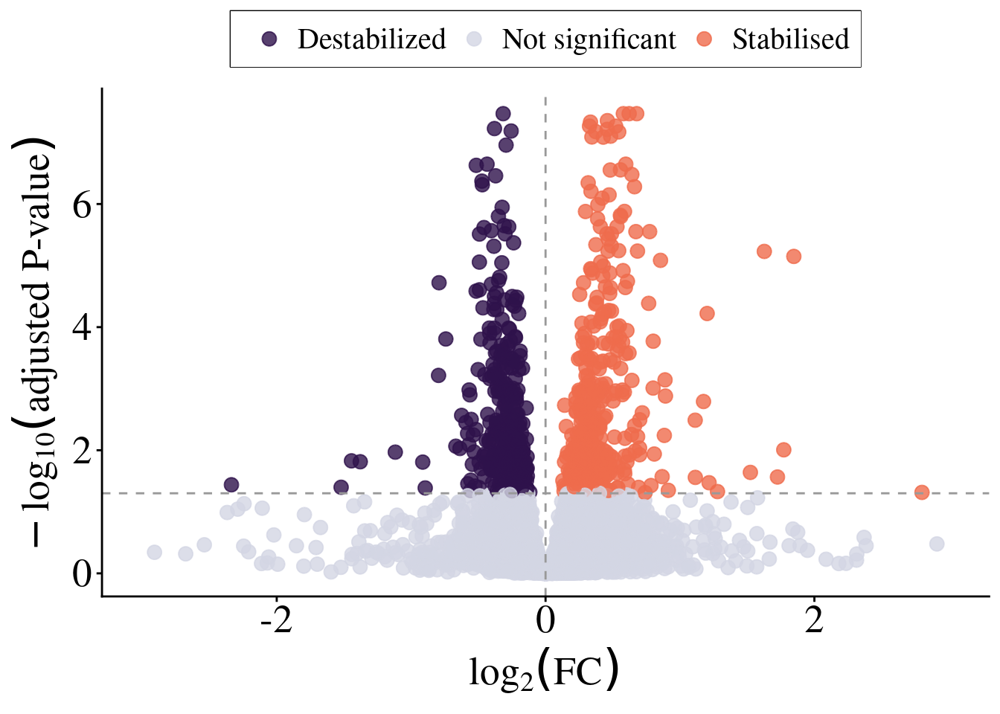
ggsave(filename = "/home/neuro/Documents/NMD_analysis/Analysis/NMD-analysis/output/Figures/Main/Upf3b-stability_fig3a.png", plot = volc, units = c("in"), height = 6, width = 6, dpi =1200)upf3b_res = z[[2]] %>% as.data.frame() %>%
dplyr::filter(padj < 0.05) %>%
#rownames_to_column("EnsID") %>%
mutate(gene = mapIds(org.Mm.eg.db, keys=EnsemblID, column="SYMBOL",keytype="ENSEMBL", multiVals="first"),
entrez = mapIds(org.Mm.eg.db, keys=EnsemblID, column="ENTREZID",keytype="ENSEMBL", multiVals="first"),
type = mapIds(org.Mm.eg.db, keys=EnsemblID, column="GENETYPE",keytype="ENSEMBL", multiVals="first")) %>% drop_na(entrez)
x= list( "Upf3b KD DEGs" = DEGenes$UPF3B_vs_Control$EnsID,
"Upf3b KD DSGs" = upf3b_res$EnsemblID)
ggvenn(x[c(1,2)], fill_color = c("#2F124B", "#801D2E"),
set_name_color = "black", text_color = "white", text_size = 6,
stroke_size = 0.45, fill_alpha = 0.8,
stroke_color = "white", show_percentage = FALSE)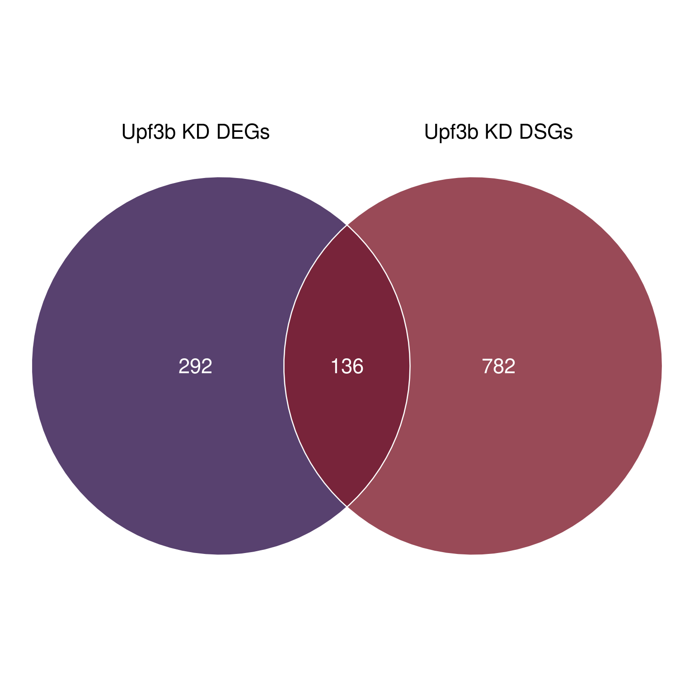
Overlap of DEG and DSA analysis from differential stability estimates
ggsave(filename = "/home/neuro/Documents/NMD_analysis/Analysis/NMD-analysis/output/Figures/Main/Upf3b-stability_overlap_fig3b.png", units = c("in"), height = 6, width = 6, dpi =1200)x = calculate.overlap(x)
go.obj <- newGeneOverlap(DEGenes$UPF3B_vs_Control$EnsID,
upf3b_res$EnsemblID,
genome.size=length(res$UPF3B_vs_Control$EnsID))
go.obj <- testGeneOverlap(go.obj)
message(paste("Odds ratio=", go.obj@odds.ratio))
message(paste("p-value=", go.obj@pval))overlapping_upf3b = DEGenes$UPF3B_vs_Control %>%
inner_join(upf3b_res %>% dplyr::rename(EnsID = EnsemblID ), by="EnsID") %>%
dplyr::rename("gene_id" = "EnsID") %>%
left_join(res_dte$UPF3B_KD_Control %>%
left_join(tx2gene) %>%
dplyr::filter(FDR < 0.05),by = "gene_id") %>%
mutate(nif= ifelse(nif_feature == "None" | is.na(nif_feature),"NIF-", "NIF+"))
overlap_DSA = overlapping_upf3b %>%
distinct(gene_id, .keep_all = TRUE) %>%
ggscatter(.,x="logFC.x", y ="log2FoldChange", cor.coef = TRUE, add = "reg.line",
conf.int = TRUE, color = "nif",
cor.coeff.args = list(size = 7, family = "serif"),
add.params = list(color = "blue",
fill = "lightgray"), alpha =0.8, shape = "nif", size =3) +
theme_bw() +
#ylab("Upf3b DSG (log2FC)") + scale_color_manual(values = c("#F15A2B", "#2E368F")) +
geom_hline(yintercept = 0, size = 0.5,lty = "dashed", color = "grey60") +
geom_vline(xintercept = 0, size = 0.5, lty = "dashed", color = "grey60") + theme(legend.position = "none") +
theme(axis.text.x = element_text(size = 18, family = "serif", color = "black"),
axis.text.y = element_text(size = 18, family = "serif", color = "black"),
axis.title = element_text(size=20, family = "serif"),
legend.box.background = element_rect(color = "black"),
legend.text = element_text(family = "serif"),
legend.title = element_text( family = "serif"),
plot.title = element_text(family = "serif", size =20),
panel.grid.major.x = element_blank(),
panel.grid.major.y = element_line( size=.1 ),
legend.position = "top",
strip.text.y = element_text(
size = 10, face = "bold.italic", family = "serif"
),
strip.text.x = element_text(
size = 10, family = "serif"
)) + labs(color = "Expression") + geom_xsideboxplot(aes(y = nif, fill= nif), orientation = "y") +
theme(ggside.panel.scale = .3) +
scale_xsidey_discrete() + geom_ysidedensity(aes(x = after_stat(density), fill = nif), alpha = 0.5) +
scale_color_manual(values = c("NIF+" = "#b23a48",
"NIF-" = "grey")) + scale_fill_manual(values = c("NIF+" = "#b23a48",
"NIF-" = "grey")) + scale_shape_manual(values = c(19,15)) + labs(
y = expression(italic(Upf3b) ~ "KD DSG (" * log[2] * "FC)"),
x = expression(italic(Upf3b) ~ "KD DEG (" * log[2] * "FC)"))
overlap_DSA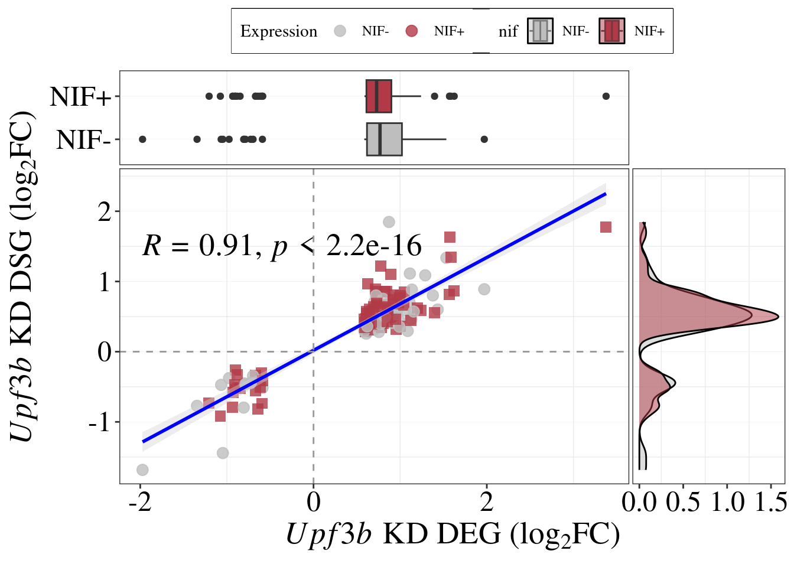
ggsave(filename = "/home/neuro/Documents/NMD_analysis/Analysis/NMD-analysis/output/Figures/Main/Upf3b-stability-overlap_3c.png", plot = overlap_DSA, units = c("in"), height = 7, width = 7, dpi =1200)upf3a_res = z[[1]] %>% as.data.frame() %>% dplyr::rename(EnsID = EnsemblID ) %>% dplyr::filter(padj < 0.05)
overlapping_upf3a = DEGenes$UPF3A_vs_Control %>%
inner_join(upf3a_res, by="EnsID") %>%
dplyr::rename("gene_id" = "EnsID") %>%
left_join(res_dte$UPF3A_KD_Control %>%
left_join(tx2gene) %>%
dplyr::filter(FDR < 0.05),by = "gene_id") %>%
mutate(nif= ifelse(nif_feature == "None" | is.na(nif_feature) ,"NIF-", "NIF+"))
upf3dKD_res = z[[3]] %>% as.data.frame() %>% dplyr::rename(EnsID = EnsemblID ) %>% dplyr::filter(padj < 0.05)
overlapping_upf3dKD = DEGenes$DoubleKD_vs_Control %>%
inner_join(upf3dKD_res, by="EnsID") %>%
dplyr::rename("gene_id" = "EnsID") %>%
left_join(res_dte$UPF3A_KD_UPF3B_KD_Control %>%
left_join(tx2gene) %>%
dplyr::filter(FDR < 0.05),by = "gene_id") %>%
mutate(nif= ifelse(nif_feature == "None" |is.na(nif_feature),"NIF-", "NIF+"))DD_NMD_candidates = list()
DD_NMD_candidates$Upf3b = overlapping_upf3b %>%
dplyr::filter(logFC.x > 0) %>%
dplyr::filter(nif == "NIF+")
DD_NMD_candidates$Upf3a = overlapping_upf3a %>%
dplyr::filter(logFC.x > 0) %>%
dplyr::filter(nif == "NIF+")
DD_NMD_candidates$Upf3dKD = overlapping_upf3dKD %>%
dplyr::filter(logFC.x > 0) %>%
dplyr::filter(nif == "NIF+") x= list( "Upf3b KD" = DD_NMD_candidates$Upf3b$gene_id,
"Upf3a KD" =DD_NMD_candidates$Upf3a$gene_id,
"Upf3 dKD" = DD_NMD_candidates$Upf3dKD$gene_id)
ggvenn(x, fill_color = c("#1c174a", "#ef476f", "#7175b3"),
set_name_color = "black", text_color = "white", text_size = 5,
stroke_size = 0.45, fill_alpha = 0.8,
stroke_color = "white", show_percentage = FALSE)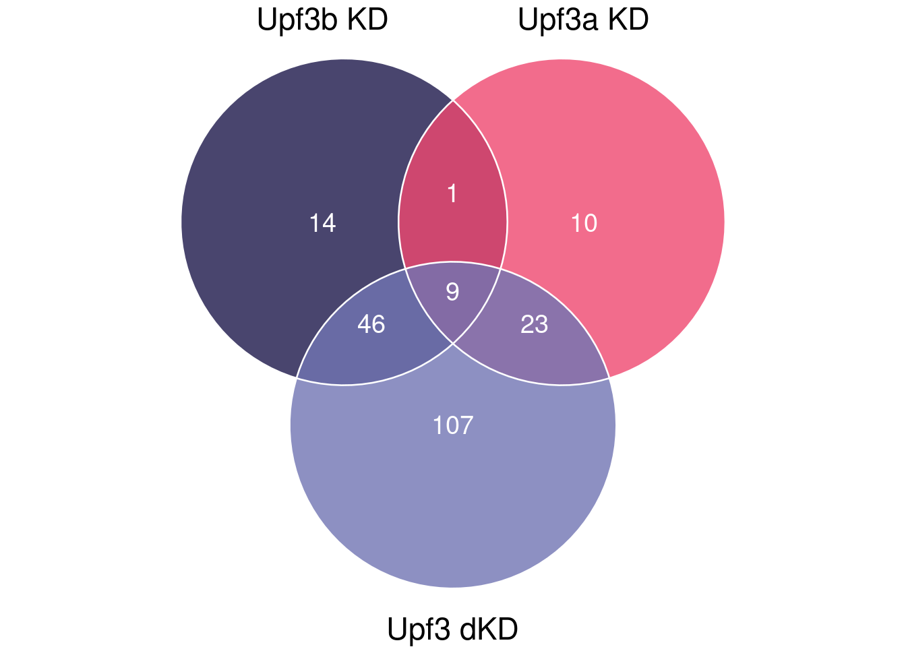
ggsave(filename = "/home/neuro/Documents/NMD_analysis/Analysis/NMD-analysis/output/Figures/Main/DD-NMD-overlap_fig3e.png", units = c("in"), height = 8, width = 6, dpi =1200)overlaps = calculate.overlap(x)go.obj <- newGeneOverlap(DD_NMD_candidates$Upf3b$gene_id,
DD_NMD_candidates$Upf3a$gene_id,
genome.size=length(res$UPF3A_vs_Control$EnsID))
go.obj <- testGeneOverlap(go.obj)
message(paste("Odds ratio=", go.obj@odds.ratio))
message(paste("p-value=", go.obj@pval))go.obj <- newGeneOverlap(DD_NMD_candidates$Upf3dKD$gene_id,
DD_NMD_candidates$Upf3a$gene_id,
genome.size=length(res$UPF3A_vs_Control$EnsID))
go.obj <- testGeneOverlap(go.obj)
message(paste("Odds ratio=", go.obj@odds.ratio))
message(paste("p-value=", go.obj@pval))go.obj <- newGeneOverlap(DD_NMD_candidates$Upf3dKD$gene_id,
DD_NMD_candidates$Upf3b$gene_id,
genome.size=length(res$UPF3A_vs_Control$EnsID))
go.obj <- testGeneOverlap(go.obj)
message(paste("Odds ratio=", go.obj@odds.ratio))
message(paste("p-value=", go.obj@pval))load(here::here("output/fgsea-heatmap-data.Rda"))heatmap_1 =all_heatmap |>
mutate(geneRatio = leSize/fgsea.size,
Geneset = tolower(gsub("REACTOME_", "", Geneset))) |>
mutate(Geneset = gsub("_", " ", Geneset)) |>
dplyr::filter(Category %in% c("Cell Cycle",
"Gene expression (transcription)",
"Metabolism of RNAs",
"Extracellular matrix",
"Cellular responses to stimuli")) |>
mutate(Category = factor(Category, levels = c("Cell Cycle",
"Gene expression (transcription)",
"Metabolism of RNAs",
"Extracellular matrix",
"Cellular responses to stimuli")),
comparison = factor(comparison, levels = c("UPF3B_KD_vs_Control",
"UPF3A_KD_vs_Control",
"DoubleKD_vs_Control",
"UPF3A_OE_vs_Control",
"UPF3A_OE_UPF3B_KD_vs_Control"))) |>
ggplot(aes(x = comparison, y = fct_reorder(Geneset, as.integer(Category)))) +
geom_point(
aes(fill = fgsea.NES, size = leSize), shape = 21
) +
theme_bw() +
theme(
legend.position = 'top',
text = element_text(color = 'grey40')
) +
scale_fill_gradient2(low="#7CCCBE",mid="#E8C1A0", high = "#F4593E") +
# scale_color_manual(values = "black") +
labs(fill = "Normalized enrichment score") +
theme(axis.text.x = element_text(size = 12, family = "serif", color = "black", angle = 90),
axis.title = element_text(size=15, family = "serif"),
legend.box.background = element_rect(color = "black"),
legend.text = element_text(family = "serif"),
legend.title = element_text( family = "serif"),
plot.title = element_text(family = "serif", size =20),
panel.grid.major.x = element_blank(),
panel.grid.major.y = element_line( size=.1 ),
legend.position = "top") + coord_flip()
heatmap_1 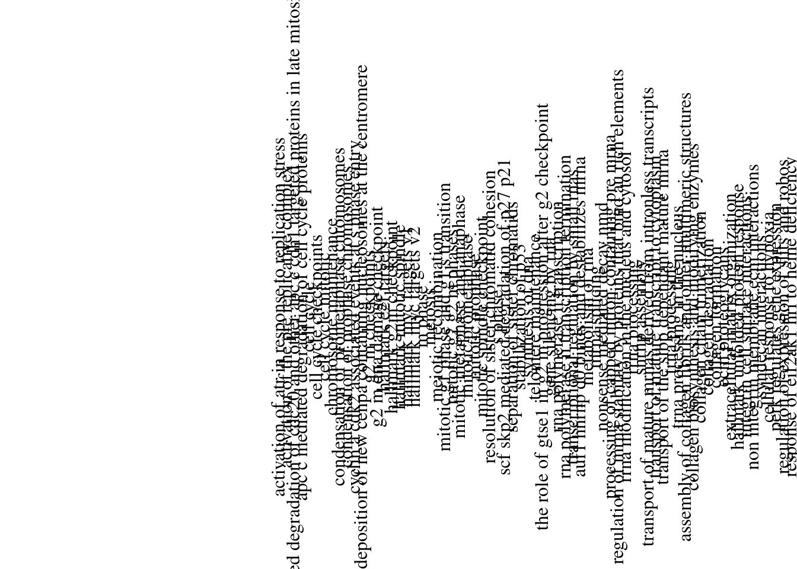
heatmap_2 = all_heatmap |>
mutate(geneRatio = leSize/fgsea.size,
Geneset = tolower(gsub("REACTOME_", "", Geneset))) |>
mutate(Geneset = gsub("_", " ", Geneset)) |>
dplyr::filter(Category %in% c( "Signal Transduction",
"Developmental Biology",
"Metabolism of proteins",
"Metabolism of Proteins",
"Chromatin organization",
"DNA Replication",
"DNA Repair",
"Disease",
"Immune",
"Metabolism",
"Programmed Cell Death",
"Autophagy")) |>
mutate(Category = factor(Category, levels = c("Signal Transduction",
"Developmental Biology",
"Metabolism of proteins",
"Metabolism of Proteins",
"Chromatin organization",
"DNA Replication",
"DNA Repair",
"Disease",
"Immune",
"Metabolism",
"Programmed Cell Death",
"Autophagy")),
comparison = factor(comparison, levels = c("UPF3B_KD_vs_Control",
"UPF3A_KD_vs_Control",
"DoubleKD_vs_Control",
"UPF3A_OE_vs_Control",
"UPF3A_OE_UPF3B_KD_vs_Control"))) |>
ggplot(aes(x = comparison, y =fct_reorder(Geneset, as.integer(Category)))) +
geom_point(
aes(fill = fgsea.NES, size = leSize), shape = 21
) +
theme_bw() +
theme(
legend.position = 'top',
text = element_text(color = 'grey40')
) +
scale_fill_gradient2(low="#7CCCBE",mid="#E8C1A0", high = "#F4593E") +
# scale_color_manual(values = "black") +
labs(fill = "Normalized enrichment score") +
theme(#axis.text.x = element_text(size = 12, family = "serif", color = "black", angle = 90),
axis.title = element_text(size=15, family = "serif"),
legend.box.background = element_rect(color = "black"),
legend.text = element_text(family = "serif"),
legend.title = element_text( family = "serif"),
plot.title = element_text(family = "serif", size =20),
panel.grid.major.x = element_blank(),
panel.grid.major.y = element_line( size=.1 ),
legend.position = "top") + coord_flip()
heatmap_2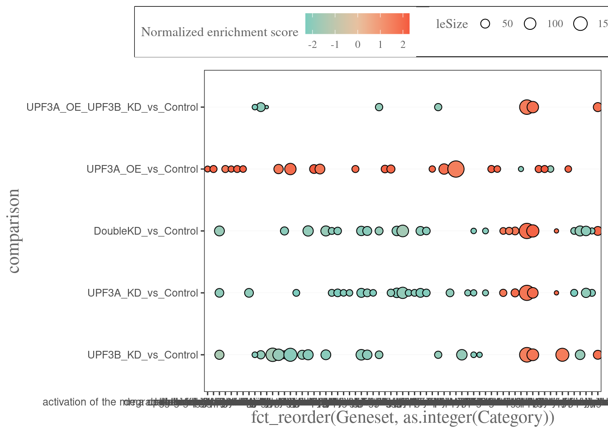
sessionInfo()R version 4.5.2 (2025-10-31)
Platform: x86_64-pc-linux-gnu
Running under: Ubuntu 22.04.5 LTS
Matrix products: default
BLAS: /usr/lib/x86_64-linux-gnu/blas/libblas.so.3.10.0
LAPACK: /usr/lib/x86_64-linux-gnu/lapack/liblapack.so.3.10.0 LAPACK version 3.10.0
locale:
[1] LC_CTYPE=en_AU.UTF-8 LC_NUMERIC=C
[3] LC_TIME=en_AU.UTF-8 LC_COLLATE=en_AU.UTF-8
[5] LC_MONETARY=en_AU.UTF-8 LC_MESSAGES=en_AU.UTF-8
[7] LC_PAPER=en_AU.UTF-8 LC_NAME=C
[9] LC_ADDRESS=C LC_TELEPHONE=C
[11] LC_MEASUREMENT=en_AU.UTF-8 LC_IDENTIFICATION=C
time zone: Australia/Adelaide
tzcode source: system (glibc)
attached base packages:
[1] grid stats4 tools stats graphics grDevices utils
[8] datasets methods base
other attached packages:
[1] GeneOverlap_1.44.0 coin_1.4-3
[3] survival_3.8-3 stargazer_5.2.3
[5] ggstatsplot_0.13.2 ggside_0.4.0
[7] janitor_2.2.1 ggsci_4.0.0
[9] eulerr_7.0.2 nVennR_0.2.3
[11] IsoformSwitchAnalyzeR_2.8.0 pfamAnalyzeR_1.8.0
[13] sva_3.56.0 genefilter_1.90.0
[15] mgcv_1.9-3 nlme_3.1-168
[17] satuRn_1.16.0 DEXSeq_1.54.1
[19] BiocParallel_1.42.2 ggrepel_0.9.6
[21] pander_0.6.6 msigdbr_25.1.1
[23] cowplot_1.2.0 ngsReports_2.10.1
[25] patchwork_1.3.2 VennDiagram_1.7.3
[27] futile.logger_1.4.3 UpSetR_1.4.0
[29] fgsea_1.34.2 GOplot_1.0.2
[31] RColorBrewer_1.1-3 gridExtra_2.3
[33] ggdendro_0.2.0 AnnotationHub_3.16.1
[35] BiocFileCache_2.16.2 dbplyr_2.5.1
[37] openxlsx_4.2.8 ggiraph_0.9.1
[39] wasabi_1.0.1 sleuth_0.30.1
[41] DT_0.34.0 VennDetail_1.23.0
[43] msigdb_1.16.0 GSEABase_1.70.1
[45] graph_1.86.0 annotate_1.86.1
[47] XML_3.99-0.19 pheatmap_1.0.13
[49] ggvenn_0.1.10 MetBrewer_0.2.0
[51] ggpubr_0.6.1 venn_1.12
[53] viridis_0.6.5 viridisLite_0.4.2
[55] tximeta_1.26.2 tximport_1.36.1
[57] goseq_1.60.0 geneLenDataBase_1.44.0
[59] BiasedUrn_2.0.12 org.Mm.eg.db_3.21.0
[61] EnsDb.Mmusculus.v79_2.99.0 ensembldb_2.32.0
[63] AnnotationFilter_1.32.0 GenomicFeatures_1.60.0
[65] AnnotationDbi_1.70.0 biomaRt_2.64.0
[67] edgeR_4.6.3 limma_3.64.3
[69] DESeq2_1.48.2 SummarizedExperiment_1.38.1
[71] Biobase_2.68.0 MatrixGenerics_1.20.0
[73] matrixStats_1.5.0 GenomicRanges_1.60.0
[75] GenomeInfoDb_1.44.3 IRanges_2.42.0
[77] S4Vectors_0.46.0 BiocGenerics_0.54.0
[79] generics_0.1.4 corrplot_0.95
[81] lubridate_1.9.4 forcats_1.0.0
[83] purrr_1.1.0 readr_2.1.5
[85] tidyverse_2.0.0 stringr_1.5.2
[87] tidyr_1.3.1 scales_1.4.0
[89] data.table_1.17.8 readxl_1.4.5
[91] tibble_3.3.0 magrittr_2.0.4
[93] reshape2_1.4.4 ggplot2_4.0.0
[95] dplyr_1.1.4
loaded via a namespace (and not attached):
[1] dichromat_2.0-0.1 progress_1.2.3 locfdr_1.1-8
[4] Biostrings_2.76.0 TH.data_1.1-4 vctrs_0.6.5
[7] effectsize_1.0.1 digest_0.6.37 png_0.1-8
[10] git2r_0.36.2 bayestestR_0.17.0 correlation_0.8.8
[13] MASS_7.3-65 httpuv_1.6.16 withr_3.0.2
[16] xfun_0.53 memoise_2.0.1 emmeans_1.11.2-8
[19] parameters_0.28.2 systemfonts_1.2.3 ragg_1.4.0
[22] gtools_3.9.5 zoo_1.8-14 pbapply_1.7-4
[25] Formula_1.2-5 prettyunits_1.2.0 datawizard_1.2.0
[28] rematch2_2.1.2 KEGGREST_1.48.1 promises_1.3.3
[31] httr_1.4.7 rstatix_0.7.2 restfulr_0.0.16
[34] rhdf5filters_1.20.0 rhdf5_2.52.1 rstudioapi_0.17.1
[37] UCSC.utils_1.4.0 babelgene_22.9 curl_7.0.0
[40] GenomeInfoDbData_1.2.14 SparseArray_1.8.1 xtable_1.8-4
[43] evaluate_1.0.5 S4Arrays_1.8.1 hms_1.1.3
[46] filelock_1.0.3 snakecase_0.11.1 modeltools_0.2-24
[49] later_1.4.4 lattice_0.22-7 pillar_1.11.1
[52] pwalign_1.4.0 caTools_1.18.3 compiler_4.5.2
[55] stringi_1.8.7 GenomicAlignments_1.44.0 plyr_1.8.9
[58] crayon_1.5.3 abind_1.4-8 BiocIO_1.18.0
[61] locfit_1.5-9.12 bit_4.6.0 sandwich_3.1-1
[64] libcoin_1.0-10 fastmatch_1.1-6 textshaping_1.0.3
[67] codetools_0.2-20 multcomp_1.4-28 crosstalk_1.2.2
[70] bslib_0.9.0 paletteer_1.6.0 plotly_4.11.0
[73] splines_4.5.2 Rcpp_1.1.0 cellranger_1.1.0
[76] knitr_1.50 blob_1.2.4 here_1.0.2
[79] BiocVersion_3.21.1 fs_1.6.6 admisc_0.38
[82] ggsignif_0.6.4 estimability_1.5.1 Matrix_1.7-4
[85] statmod_1.5.0 tzdb_0.5.0 pkgconfig_2.0.3
[88] cachem_1.1.0 RSQLite_2.4.3 DBI_1.2.3
[91] fastmap_1.2.0 rmarkdown_2.29 geneplotter_1.86.0
[94] Rsamtools_2.24.1 broom_1.0.10 sass_0.4.10
[97] coda_0.19-4.1 BiocManager_1.30.26 insight_1.4.2
[100] carData_3.0-5 farver_2.1.2 yaml_2.3.10
[103] workflowr_1.7.2 rtracklayer_1.68.0 cli_3.6.5
[106] txdbmaker_1.4.2 lifecycle_1.0.4 mvtnorm_1.3-3
[109] lambda.r_1.2.4 backports_1.5.0 timechange_0.3.0
[112] gtable_0.3.6 rjson_0.2.23 parallel_4.5.2
[115] jsonlite_2.0.0 bitops_1.0-9 bit64_4.6.0-1
[118] assertthat_0.2.1 zip_2.3.3 RcppParallel_5.1.11-1
[121] futile.options_1.0.1 jquerylib_0.1.4 zeallot_0.2.0
[124] lazyeval_0.2.2 htmltools_0.5.8.1 GO.db_3.21.0
[127] rappdirs_0.3.3 formatR_1.14 glue_1.8.0
[130] httr2_1.2.1 XVector_0.48.0 RCurl_1.98-1.17
[133] rprojroot_2.1.1 BSgenome_1.76.0 boot_1.3-32
[136] R6_2.6.1 gplots_3.2.0 labeling_0.4.3
[139] Rhdf5lib_1.30.0 rstantools_2.5.0 DelayedArray_0.34.1
[142] tidyselect_1.2.1 ProtGenerics_1.40.0 xml2_1.4.0
[145] car_3.1-3 statsExpressions_1.7.1 KernSmooth_2.23-26
[148] S7_0.2.0 htmlwidgets_1.6.4 hwriter_1.3.2.1
[151] rlang_1.1.6 uuid_1.2-1